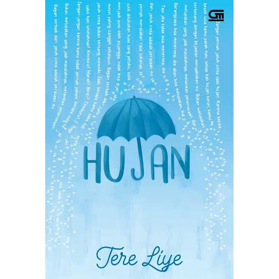
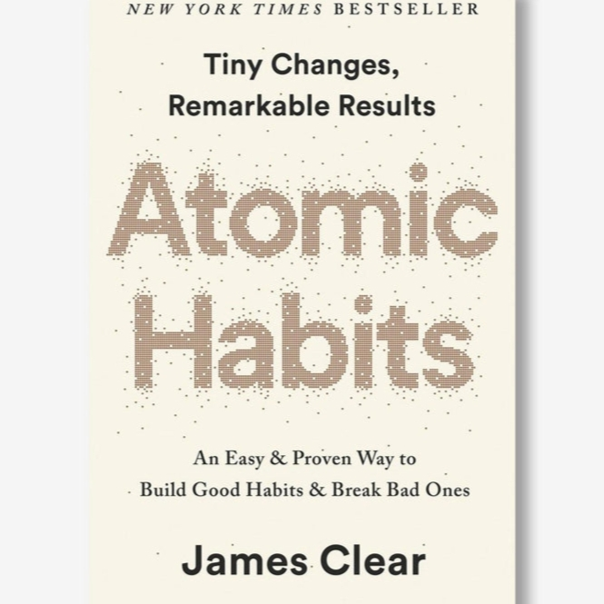
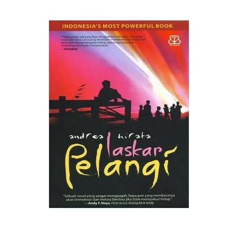
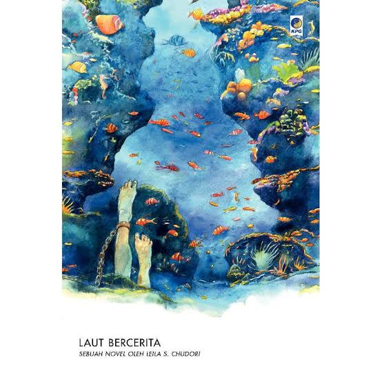
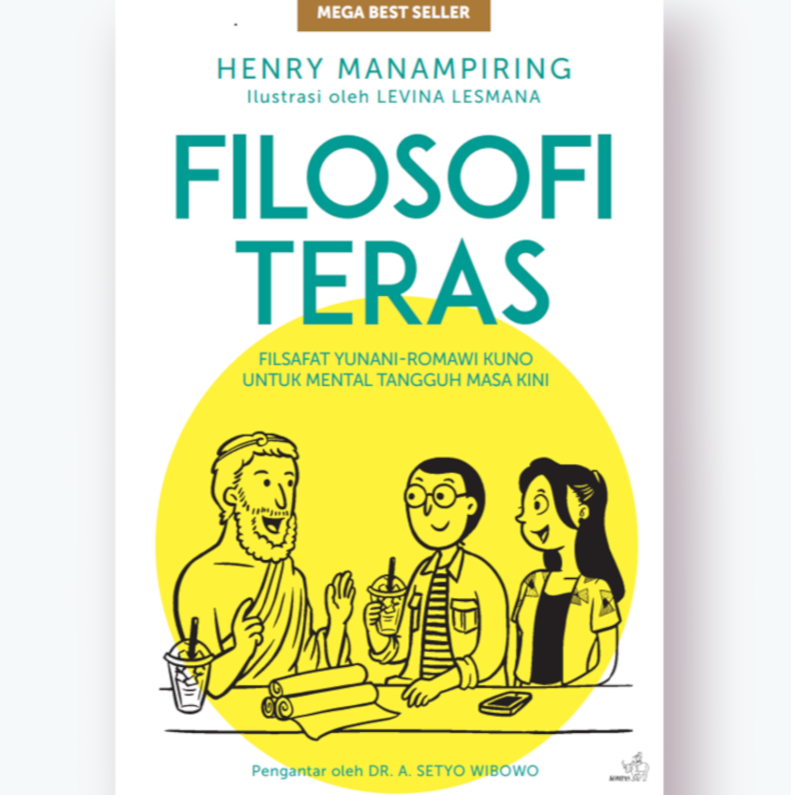

 |
Judul Buku: Hujan
Penulis: Tere Liye Penerbit: Gramedia Pustaka Utama Tahun: 2016 Fiksi/Non-Fiksi:Fiksi |
"Jangan pernah jatuh cinta saat hujan" |
 |
Judul Buku: Atomic Habits
Penulis: James Clear Penerbit: Gramedia Pustaka Utama Tahun: 2019 Fiksi/Non-Fiksi: Non-Fiksi |
"Perubahan besar berasal dari langkah-langkah kecil yang konsisten, bukan transformasi drastis instan" |
 |
Judul Buku: Laskar Pelangi
Penulis: Andrea Hirata Penerbit: Benteng Pustaka Tahun: 2005 Fiksi/Non-Fiksi: Fiksi |
"Kecerdasan diukur bukan dengan angka, tetapi dengan hati" |
 |
Judul Buku: Laut Bercerita
Penulis: Leila S.Chudori Penerbit: Kepustakaan Populer Gramedia Tahun: 2017 Fiksi/Non-Fiksi: Fiksi |
"Matilah engkau mati, kau akan lahir berkali-kali..." |
 |
Judul Buku: Filosofi Teras
Penulis: Hendri Manampiring Penerbit: Kompas Tahun: 2018 Fiksi/Non-Fiksi: Non-Fiksi |
"Kamu tidak bisa dihina orang lain, kecuali kamu sendiri yang pertama-pertama menghina dirimu sendiri" |